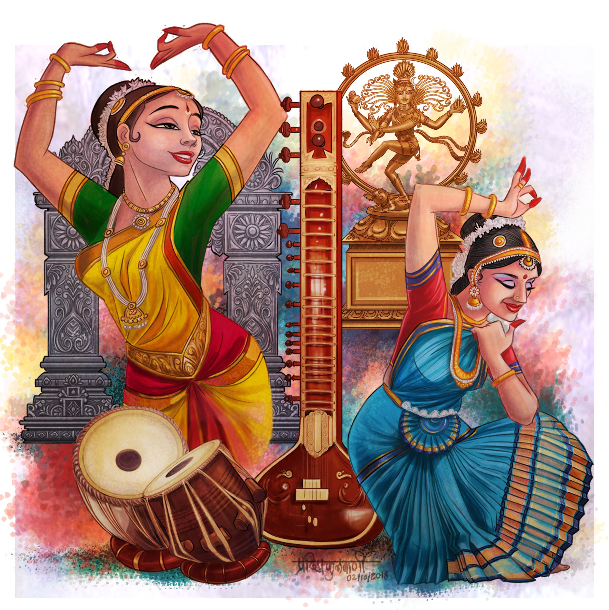

MythicVisions
Choose an image:
Horror
Fantasy
Fiction

Janet and Stephan were two people with many similarities. Both had the same deep, dark black hair and a tendency to dress formally too. On this day they compared each other, wearing white shirts with frilly old lace collars. The bright, crisp white set against the creamy but delicate fabric of the lace was a sight to behold. Even the choice of neckties made them look like two peas in a pod; identical paisley and gingham ties adding the perfect finishing touch to their outfits. They arrived hand in hand at the celebration, drawing in eyes and drawing out compliments due to the perfection of their attire and shared style. Other guests gawked as Janet and Stephan graced each other with love and laughter, no one able to take their eyes off the couple. Every other guest seemed to fade away, their presence seeming almost romantic and surreal. The two were the talk of the party, their relationship and attire admired by those who took note of it. They brought oldlace with them to the party, Natalie and Stephan becoming a timeless representation of kindred passion in fashion. An inspiration to all, the pair of people in white were the epitome of successful coupling, something Janet and Stephan basked in for the rest of the night.